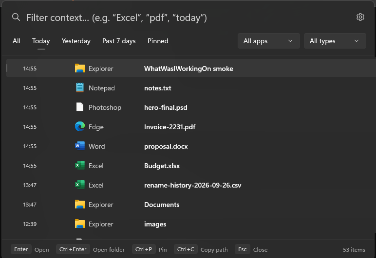
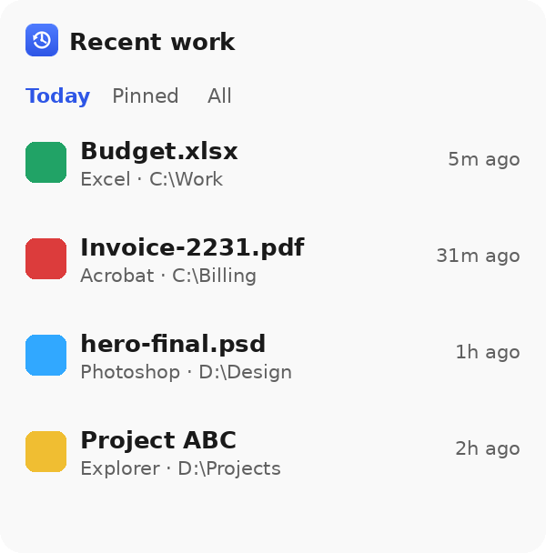
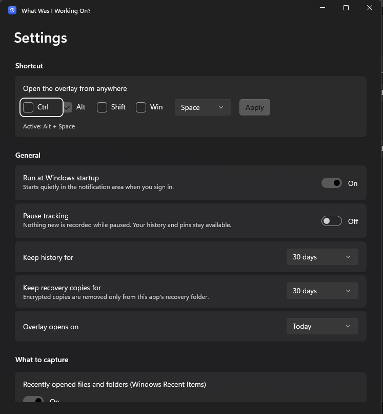

Find it fast
Pop open the recent-work overlay with Alt + Space. Search by filename, app, folder, extension, and more.
01 / QUICK FINDYOUR WORK, RIGHT WHERE YOU LEFT IT
That file you had open. That folder you were in. Find your recent work in a flash — and get straight back to it.

Instant recallFind what you just touched
Zero cloudYour activity stays on your PC
Less searchingMore time back in your work
THE LITTLE THINGS THAT ADD UP
One lightweight place for the files and folders that make up your day.
Pop open the recent-work overlay with Alt + Space. Search by filename, app, folder, extension, and more.
01 / QUICK FINDReopen a file in its usual app, open its containing folder, or copy its path. No retracing your steps.
02 / PICK UPBrowse full work history by date, app, file type, or what you remember about the name.
03 / LOOK BACKAdd the optional Recent work widget to your Windows 11 board. See today’s work without breaking focus.
04 / WINDOWS 11 WIDGETMORE THAN A QUICK LIST
Search across your recent work, narrow it down by app or file type, then open the exact item you need. Keep useful things pinned for later.

PRIVATE BY DESIGN
The app listens to recent activity Windows already provides. It doesn’t index your disks or read document contents. Your history is encrypted and stored on your device — not sent to a server.

YOUR SHORTCUT. YOUR SETTINGS.
Choose your shortcut, decide what to capture, pause tracking whenever you like, and control how long local history stays on your device.
Make it yoursGOOD TO KNOW
It helps you find recently used files and folders, search your local work history, and reopen items. Press Alt + Space to open the quick overlay.
No. History is stored locally in encrypted app storage. The app does not require an account, cloud service, or internet connection for its core features.
Windows 10 version 1809 or later and Windows 11 on x64 and ARM64 PCs. The optional Widgets integration requires Windows 11.
Recovery candidate scanning is optional and starts only when you request a scan. It checks known application recovery locations; it can’t guarantee that every unsaved document can be recovered.
YOUR NEXT “WHERE DID I PUT THAT?” MOMENT
Find your recent work and get back into the flow.
Get it on Microsoft Store For Windows 10 and Windows 11 · x64 and ARM64